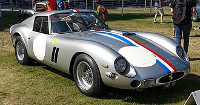
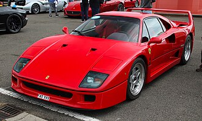

Welcome to the Ferrari Fan Website
Here you can find information about Ferrari cars, drivers, and racing events.
History
Ferrari was founded by Enzo Ferrari, an Italian racing driver and team
manager, with its roots in motorsport.
After running Scuderia Ferrari as a racing team in the 1930s, Enzo
produced the first Ferrari car in 1947, the 125 S, featuring a V12
engine.
Ferrari quickly became successful in Formula 1 and endurance racing,
using road car sales to fund competition.
Over the decades, the brand became famous for combining high
performance, elegant Italian design, and exclusivity,
creating legendary models like the 250 GTO, Testarossa, and F40.
Today, Ferrari remains one of the most iconic luxury car manufacturers
in the world, closely tied to its racing heritage.
Famous Ferrari Models
- Ferrari 250 GTO
- Ferrari F40
- Ferrari Enzo
- Ferrari LaFerrari
- Ferrari 488 GTB
Gallery of Ferrari famous models



Ferrari's homeland
Ferraris homeland is Italy, specifically the region of Emilia-Romagna
in northern Italy, an area famous for engineering, motorsport, and
food culture.
Ferrari is based in Maranello, a small town near Modena, where Enzo
Ferrari was born and where the companys headquarters and main factory
are still located today.
This region is often called “Motor Valley” because it is also home to
brands like Lamborghini, Maserati, and Ducati.
Emilia-Romagnas strong mechanical tradition, passion for racing, and
Italian craftsmanship deeply shaped Ferraris identity, design style,
and racing spirit, making the brand a symbol of Italian excellence
worldwide.
Video from Ferraris factory
Ferraris factory location
Table
| Category | Details |
|---|---|
| Brand | Ferrari |
| Founded | 1947 |
| Founder | Enzo Ferrari |
| Homeland | Maranello, Italy |
| Famous Models | 250 GTO, Testarossa, F40, LaFerrari |
| Motorsport | Formula 1 |